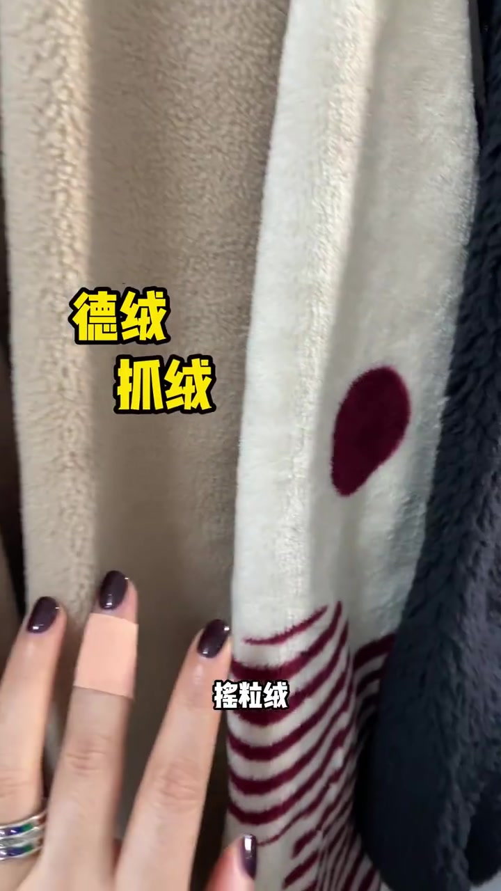
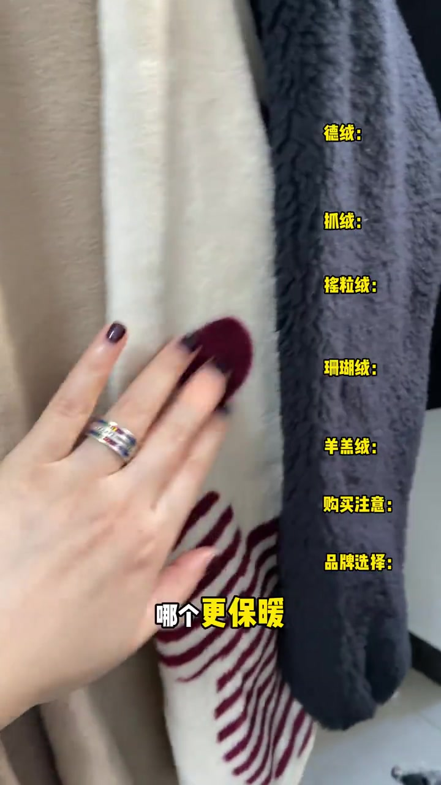
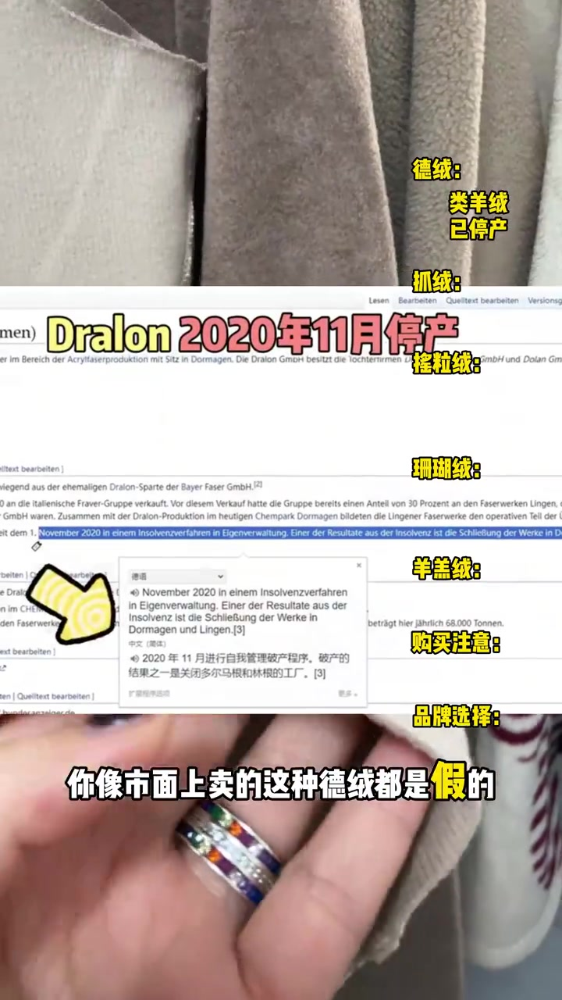
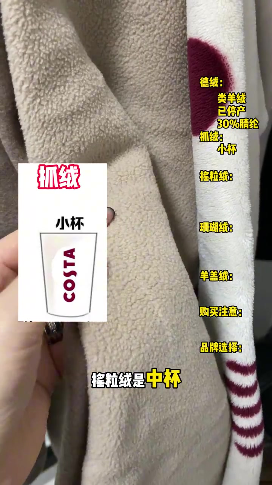
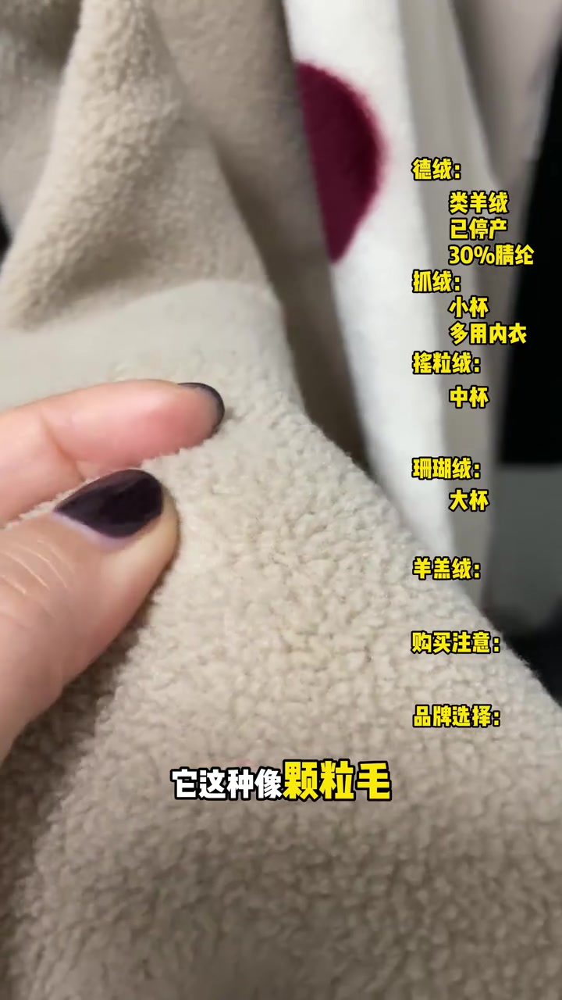
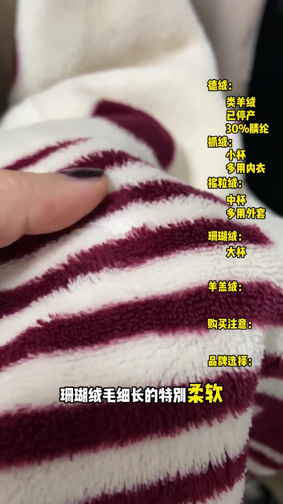
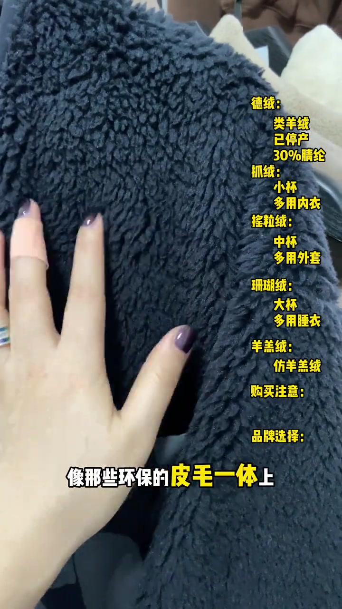
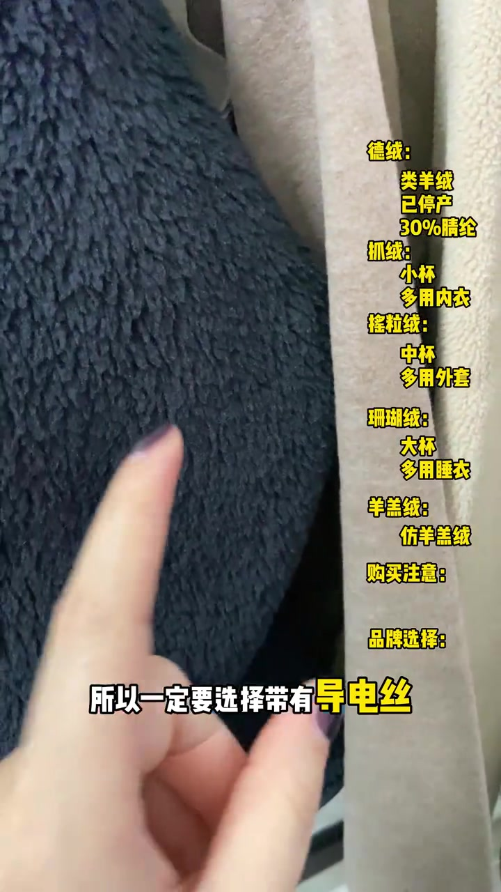

开场：这么多“绒”，差别到底在哪
镜头贴近几块绒面料：米色短绒、带酒红圆点的白绒、深灰卷曲绒。叠字先点名「德绒」「抓绒」「摇粒绒」，再把右侧目录拉满——德绒、抓绒、摇粒绒、珊瑚绒、羊羔绒、购买注意、品牌选择。
口播抛出三个问题：这么多绒有什么区别？哪个更保暖？哪个品牌更有性价比？紧接着给一个总判断：虽然说都是化纤或者说都是塑料，但是还是有很大区别的。
可见字幕校正：Whisper 把「德绒 / 抓绒 / 摇粒绒 / 珊瑚绒 / 羊羔绒」听成「德蓉 / 抓蓉 / 咬麗蓉 / 珊瑚蓉 / 羊膏蓉」，并把「化纤」听成「畫鮮 / 花鮮」。下文按可见叠字与字幕叙述，文末转录区仍保留原始分段。


德绒：类羊绒概念在，正品早就停产
主讲人先夸德绒：保暖性堪比羊绒，因为纤维与纤维之间可以储存空气。话锋立刻转硬——真正的德绒早就停产了；市面上卖的这种德绒都是假的，只是沿用了德绒的概念。
画面切到德文网页截图，大字写「Dralon 2020年11月停产」，并指向破产与工厂关闭的翻译框。叠字同时写「类羊绒 已停产」。随后她举起薄薄的米色样片，字幕钉死：「你像市面上卖的这种德绒都是假的」。
「你其实国内的都是用 30% 到 55% 的腈纶去代替的。」——侧栏叠字也同步标出「30%腈纶」。
这是主讲人基于停产信息与国内替代比例给出的立场：把当前“德绒”标签当作概念复用，而非德国 Dralon 原厂面料。视频未展开第三方检测报告。

抓绒、摇粒绒、珊瑚绒：同一家亲戚，绒毛长短不同
叠字落到「抓绒摇粒绒珊瑚绒」。主讲人说这完完全全就是一个东西，只是表面上的绒毛长短不一，并用饮料杯号打比方：抓绒像最小杯，摇粒绒是中杯，珊瑚绒是大杯。
抓绒段：她举起印着「抓绒 / 小杯」和咖啡纸杯示意的白卡，对着短毛面料讲——由钢丝滚球完成绒毛抓起，一般用在内衣上。
摇粒绒段：手捏带颗粒感的米白绒面，解释它是用长抓绒面料放进机器里使劲摇出颗粒感，一般用在外套或内胆上；侧栏叠字写「中杯」「多用外套」。
珊瑚绒段：手指陷入白底酒红圆点的细长绒面，字幕写「珊瑚绒毛细长的特别柔软」，用途叠字落到「多用睡衣」。



羊羔绒：全名叫仿羊羔绒
镜头切到深灰卷曲绒。主讲人说羊羔绒接着它全名叫仿羊羔绒，说白了就是真正羊羔绒的替代品；像那些环保的平价毛衣上，一般用的就是这种仿的羊羔绒。侧栏同步写「仿羊羔绒」。

购买注意：保暖好，但要防静电
总结到购买注意：这些绒保暖性确实非常好，但毕竟都是化纤类产品，极容易产生静电，所以一定要选择带有导电丝或者防静电处理的。画面字幕高亮「导电丝」，侧栏购买注意写「防静电处理」。

品牌：PolarTec 带头，平价替代品跟上
品牌选择段，主讲人点名一个品牌「独树一帜」——口播近似 Polartec（Whisper 听成「跑了tac」）：因为他家是抓绒的鼻祖，引领了当时的户外潮流，所以所有带有 P 标的都比较贵。
随着需求增多，市面上出现特别多的平价替代品，举例优衣库、迪卡侬、地球科学家等等。叠字同步强调「平价替代品」。
品牌贵贱与“鼻祖”叙事是主讲人口头排序，视频没有给出价格表或实验室保暖对比；适合当作选购线索，不宜直接当成跨品牌排行榜。